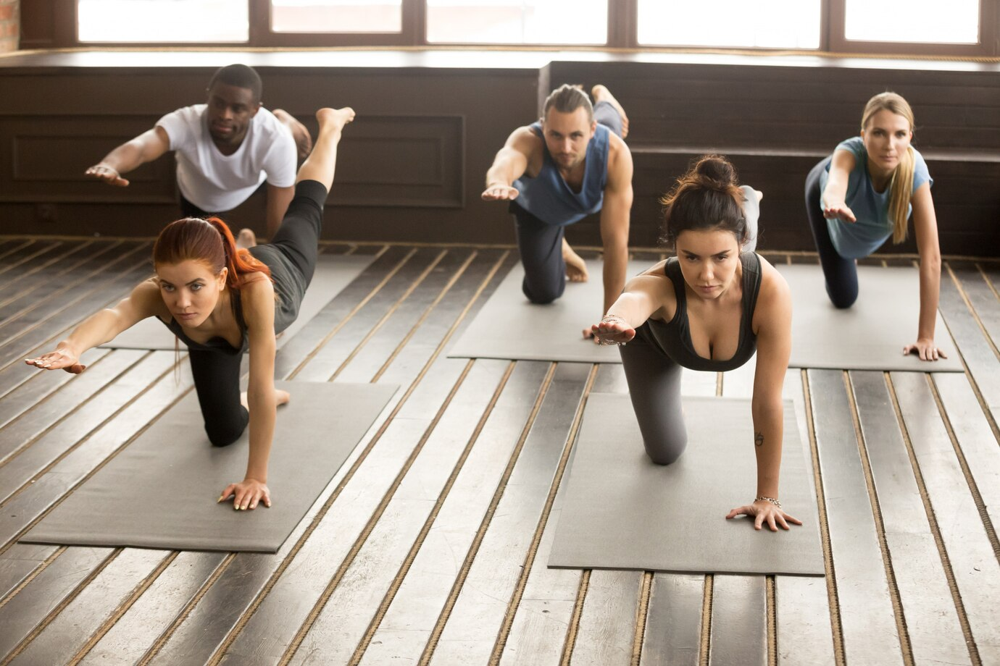
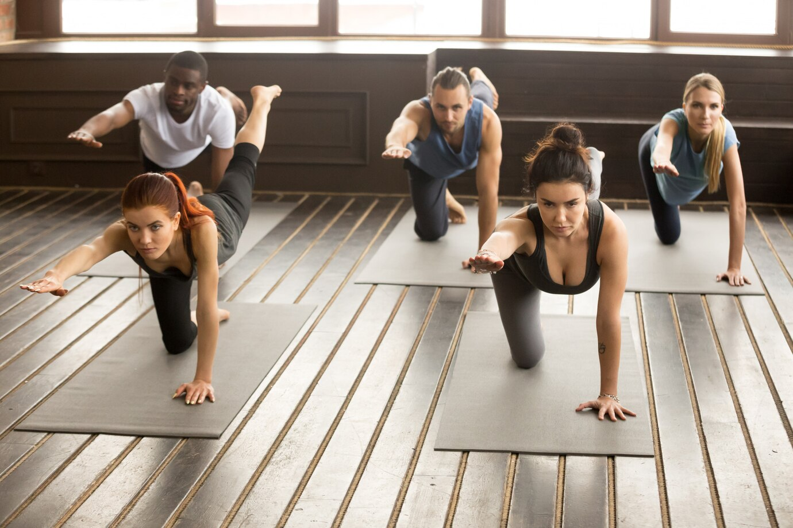

Why shoud you start practicing yoga?
Yoga is your ally in taking care of your health. Yoga act as a gentele massage of our internal organs and invigarate the entire body, strengtherns the immune system and improves overall well-being.
Join us to learn and practise do yoga. We’re a supportive community where everyone is welcome - from beginners to those with an practice.

Sleep improvment
Rest and relaxation invariably lead to healthy sleep. Yoga will teach you to switch off from problems, to immerse yourself in a clam state.

Posture correction
The back will become strainghter, posture will improve. The chest will stainghten the shoulders well, the stoop will go away.

Muscles and bones
Yoga develops muscles strangth and endurance. While you are practicing yoga, your muscles grow and your bones and ligaments stainghten.


 
